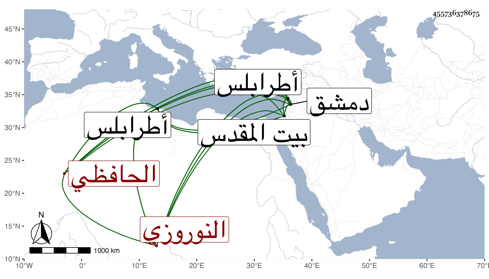

0902Sakhawi.DawLamic.ITO20230111-ara1.EIS1600.455736378675
Biography ID: 455736378675
1100
يشبك النوروزي الحافظي . تنقل بعد أستاذه حتى صار من أمراء دمشق ثم عمل حجوبية طرابلس ثم دمشق ثم نيابة طرابلس ، كل ذلك في أيام الظاهر جقمق بالبذل لعدم تأهله ثم قبض عليه وأودع السجن ثم أخرج إلى القدس فمات به بعد مدة في المحرم سنة ثلاث وستين .
